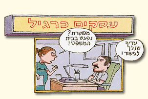

|

|

|

|

|

|

|

|
גישור ישראל

גישור בענייני עבודה
גישור בענייני עבודה מאפשר לצדדים להפיק תועלת מהיתרונות הבאים הגלומים בו
- התאמה למאפיינים הייחודיים: הגישור בענייני עבודה מביא בחשבון את המורכבות והמאפיינים של יחסי העבודה, תוך התחשבות בדיני העבודה ובמה צפוי להיפסק בבית הדין.
- חסכון בזמן ובעלויות: בגישור ישראל צבור ניסיון רב בפתרון מחלוקות שהגיעו ומגיעים מבתי הדין לעבודה. בעזרת ניסיון זה ניתן לפתור מחלוקות שעלולות להימשך שנים בבית הדין בתוך ישיבת גישור או שתיים (לעיתים נדירות נדרשות יותר מישיבה או שתיים) ולחסוך עלויות רבות בזמן עבודה בהוצאות ניהול הסכסוך.
- התחשבות בדין הנוהג ובאינטרסים נוספים: ההכרות המעמיקה הצבורה בגישור ישראל לגבי הדין הנוהג מאפשרת לקיים הליך גישור קצר, יעיל וזול תוך מיצוי הזכויות, הסיכויים והסיכונים ותוך הכרה ושילוב של אינטרסים נוספים.
- המשך שיתוף פעולה: במקומות הנדירים יותר בהם יש סיכוי להמשך יחסי העבודה, הגישור בענייני עבודה מאפשר לצדדים להמשיך לפעול יחד, תוך בניית הסכם שהוא חלק מהמערכת החוזית הקיימת בין הצדדים
- לגישור ישראל ניסיון רב בפתרון סכסוכים בענייני עבודה באמצעות גישור ורוב המסוכסכים המופיעים בפני גישור ישראל מסיימים את המחלוקת בהבנות והסכם.